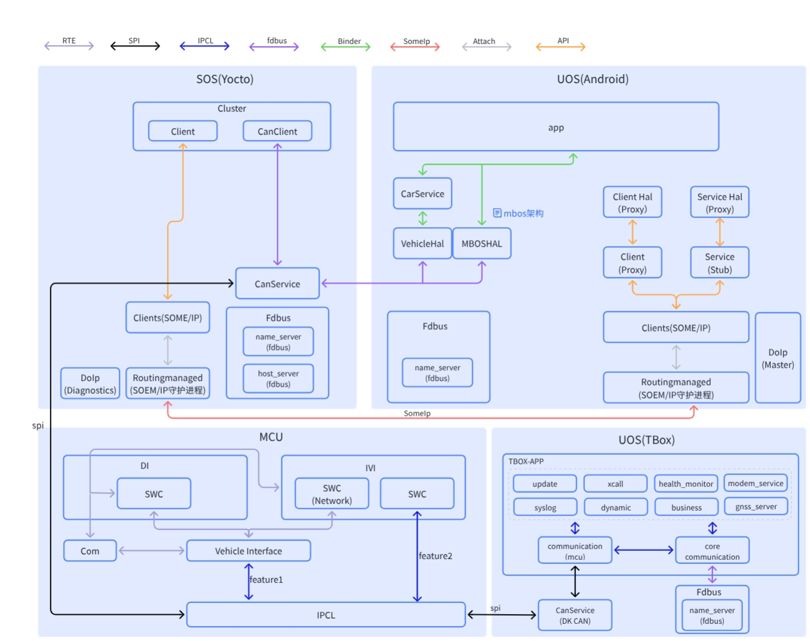

01 三张架构图的阅读方法
本章于 2026-09-20 按原架构补充正文解释；原图、模块/流程 ID 和分层保持原样。新证据的版本限定随段落标注。本轮更新说明。
1.1 先确定视图，再解释方框
资料核对后的架构解释（2026-09-20）
阅读原图时把“在哪一层”与“怎样执行”分开。层级和已有箭头继续按原图；PVT/MTK 用于解释箭头两端实际交接的请求、状态、buffer 和完成条件。例如 Camera 的框仍在原位置，新增解释说明 Yocto 硬件服务和 Android 客户端角色；不因存在两个 camerahalserver 就在总图新增一个 OS。S145 · MT8676_Hypervisor_Camera_User_Manual_V1.1.pdf · PDF第6-8页〔本地来源〕 S019 · MT8668_Hypervisor_Camera_User_Manual_CN_V1.0.pdf · PDF第6-8页〔本地来源〕
三张图不是三套互相替代的架构，而是同一类座舱系统的三个观察角度：
- 图 1 是 Android/AAOS Guest 内部分层视图：从应用、Framework、 Android Runtime、库、硬件抽象层（Hardware Abstraction Layer，HAL） 一直下沉到 Kernel 和 BootLoader。[可信度：架构图确认] [证据：original-diagram-01]
- 图 2 是 整机部署与资源归属视图：把独立 MCU 与 SoC、Hypervisor、 SOS/Yocto Host、UOS Android Guest、UOS TBox Guest 和 Nebula OS 放在一张物理部署图中。[可信度：架构图确认] [证据：original-diagram-02]
- 图 3 是 跨域通信与协议链路视图：强调 Binder、FDBus、SOME/IP、 SPI、IPCL、RTE、Attach 和 API 等连接方式，以及 Cluster、CanService、 CarService、VehicleHAL 与 TBox 通信模块的关系。[可信度：架构图确认] [证据：original-diagram-03]
因此，读图顺序应是“这是什么视图”→“方框是什么种类”→“箭头代表什么数据” →“证据允许下什么结论”，而不是看到相邻方框就直接画调用链。
1.2 原始图
图 1：Android/AAOS Guest 内部分层图

这张图回答“Android Guest 内部有哪些层和服务”。例如 Application 层出现 Launcher、SystemUI、CarSettings、MediaCenter 等应用；Framework 中既有 Java Services，也有 Car Services、Native Services 和 System 组件；再往下是 Runtime、 Infra、Libraries、External、HAL 与 Kernel。[可信度：架构图确认] [证据：original-diagram-01]
它不直接回答某应用一定调用哪个服务、哪个进程拥有某设备、Binder 接口名是什么， 也不说明每个方框都是独立进程。容器只证明“被归入该层/组”，不证明运行时拓扑。
图 2：整机部署与资源归属图

这张图把独立 MCU 与 SoC 分开；SoC 上方由 Hypervisor 承载多个域。SOS/Yocto 区域被标为 Host，Android 与 TBox 被标为 Guest，Nebula OS 区域出现 UOS VM process、SOS VM process 和 Micro Kernel。[可信度：架构图确认] [证据：original-diagram-02]
它适合回答“模块部署在哪个域”“物理驱动更接近 Host 还是 Guest”“故障可能被哪个 虚拟机边界隔离”。但图中纵向位置仍不能自动转换为私有启动顺序；例如先启动哪个 VM、 哪个服务发布 Ready，需要 Hypervisor 配置、systemd unit 和启动日志确认。
图 3：跨域通信与协议链路图

这张图把协议作为图例放在顶部，并在域内画出 Client、Proxy、Stub、服务、守护进程 和命名服务。它适合回答“这一段看起来使用什么通信机制”“哪一个方框像生产者或 消费者”“跨域前后有哪些转换点”。[可信度：架构图确认] [证据：original-diagram-03]
它不证明图例中的协议覆盖箭头一定与某版本实现完全一致，也不证明同名 CanService
在各域就是同一个进程。协议图应与接口描述语言（Interface Definition Language，IDL）、
服务发现配置、进程树和抓包互证。[可信度：待 MT8676 确认]
1.3 六类方框与两类“不是模块”的元素
| 类型 | 如何识别 | 它通常回答什么 | 不应直接推导什么 |
|---|---|---|---|
| 容器/分组框 | 大框包围多个小框 | 归属域、层或逻辑分组 | 独立进程、调用方向 |
| 运行时模块 | 服务、应用、进程名 | 处理输入并产生输出 | 仅凭名称确定私有实现 |
| Library | Lib、Libraries、.so 语义 |
为进程提供可链接能力 | 自己主动运行或拥有线程 |
| Service | Service、Manager、Server |
长生命周期能力或共享状态 | 一定是单进程或 Binder 服务 |
| HAL | 位于 Framework/Driver 之间 | 稳定上层接口与硬件适配 | 一定直连物理设备 |
| Driver | Kernel/Drivers 或具体驱动 | 中断、DMA、寄存器、队列 | 上层业务策略 |
| 协议图例 | 顶部带颜色的双向箭头 | 解释某种连线语义 | 可执行模块 |
| 物理设备 | MCU、SoC、屏、Camera、Modem 等 | 数据最终来源或执行对象 | 等同于软件服务 |
协议本身不是进程；库本身也通常不是主动服务。一个服务可能链接多个库，一个 HAL 可能通过虚拟设备而不是物理寄存器工作，一个驱动也可能只是 Guest Frontend。
1.4 同名不等同：身份要靠运行时证据
同一标签可能在不同抽象层重复出现：
- 图 1 的
CarService是 Android Car Services 分组中的平台能力； - 图 2 的
CarService是 Android Guest 的一个部署块； - 图 3 的
CarService位于 App 与 VehicleHAL 之间。
这些出现项可以表示同一逻辑能力的不同视角，但不能仅凭名字宣布“同一进程、同一 二进制、同一 Binder 对象”。身份确认需要多个相互独立的证据，例如包名/二进制名、 进程号、服务注册名、接口版本和启动配置。[可信度：标准机制推断]
同理，图 3 TBOX-APP 中的 modem_service 只是图中标签；冻结的 UMDP 包含
fb_modemServices 是另一个 MT8676 资料事实。两者当前只可列为“可能有关联、需核验”，
不能合并命名或断言等同。[可信度：架构图确认] [证据：original-diagram-03]
[可信度：MT8676 资料确认] [证据：umdp-files-fb-modem-service]
1.5 四种方向：命令、状态、Buffer 与反馈
命令方向
命令由意图发起方流向执行方。例如“空调设定 22 ℃”可能从 UI 向 CarService、 VehicleHAL、跨域车辆服务、MCU 和执行器传播。命令链中的上游是更接近用户意图的一端， 下游是更接近执行对象的一端。
状态/事件方向
状态通常从信号源或监测方流向显示/策略消费者。例如车速从传感器、CAN、MCU、 跨域服务向 Cluster 传播。此时 MCU 是上游，Cluster 是下游；方向恰好可能与控制命令相反。
媒体 Buffer 方向
Camera、视频和显示传递的是有所有权和生命周期的 Buffer，而不是简单数值。上游生产 Buffer，下游消费并归还；还需跟踪 Buffer ID、时间戳、Fence 和释放点。
反馈/确认方向
同步返回、异步完成事件、执行器回读和首帧上屏都属于反馈。收到“发送成功”只证明请求 进入某层，不一定证明硬件执行或用户结果出现。诊断必须明确所需的最后一级确认。
1.6 逻辑业务链与物理承载链
逻辑业务链描述“意义如何变化”：
Source → Producer → Serialize → Channel → Transport
→ Router → Consumer → State Machine → User Result物理承载链描述“比特或 Buffer 如何移动”：
Sender Buffer → Driver/DMA/FIFO → Controller → Physical/Virtual Link
→ Peer Controller → Peer Driver → Receiver Buffer逻辑链可能复用同一条以太网或 SPI 物理链；物理链通不等于某 Topic 新鲜，也不等于 订阅回调到达。反过来，业务状态错误也不一定是物理断链，可能是反序列化、路由、缓存、 代际或状态机问题。
1.7 统一链路模型
展开架构图（原图代码保留）
flowchart LR SRC["Source\n信号源/用户意图"] --> PROD["Producer\n采集/生成"] PROD --> SER["Serialize\n编码/封装"] SER --> CH["Channel\n会话/主题"] CH --> TR["Transport\nSPI/以太网/共享内存"] TR --> RT["Router\n服务发现/分发"] RT --> CON["Consumer\n缓存/业务逻辑"] CON --> RES["User Result\n显示/声音/执行"] RES -. "ACK/回读/首帧" .-> SRC
查看原始图代码
flowchart LR
SRC["Source\n信号源/用户意图"] --> PROD["Producer\n采集/生成"]
PROD --> SER["Serialize\n编码/封装"]
SER --> CH["Channel\n会话/主题"]
CH --> TR["Transport\nSPI/以太网/共享内存"]
TR --> RT["Router\n服务发现/分发"]
RT --> CON["Consumer\n缓存/业务逻辑"]
CON --> RES["User Result\n显示/声音/执行"]
RES -. "ACK/回读/首帧" .-> SRC实线箭头表示本次业务数据的主方向；虚线箭头表示反馈闭环，不承诺具体反馈一定回到原始
物理源。Serialize 到 Channel 的箭头意味着数据进入协议语义，Channel 到
Transport 表示会话/主题依赖某种物理或虚拟承载；Router 到 Consumer 表示路由
成功后仍需消费与状态机处理。该模型是诊断框架，不是 MT8676 私有接口图。
[可信度：标准机制推断]
1.8 关联标识：怎样把各域日志串成一条链
| 标识 | 解决的问题 | 使用方法 | 常见陷阱 |
|---|---|---|---|
| Timestamp | 事件先后 | 同时保留单调时钟与墙上时间 | 域间时钟未同步 |
| Sequence | 是否丢包、乱序、重复 | 生产者递增，消费者记录最后值 | 重启后清零未标代际 |
| Generation | 属于哪次启动/会话 | VM、服务或 Client 重建时更新 | 旧回调覆盖新状态 |
| Request ID | 请求与响应如何配对 | 入口生成并跨层透传 | 中间层重建 ID |
| Topic/Property | 这是什么业务数据 | 记录名称、版本和订阅状态 | 只记录数字而无映射表 |
| Buffer ID | 哪个媒体缓冲区 | 生产、入队、出队、归还均记录 | 地址复用被误认为同一帧 |
| Fence ID | 生产/消费是否完成 | 跟踪 signal、wait 和超时 | 只看 Buffer 不看同步 |
本手册不发明私有 ID。若当前实现没有贯通的 Request ID，可先用“同一时间窗 + 业务键 + Sequence + Generation”建立候选关联，再以抓包或插桩验证。 [可信度：标准机制推断]
1.9 三图对应表
| 概念 | 图 1：Android 内部分层 | 图 2：部署/归属 | 图 3：通信/协议 | 阅读结论 |
|---|---|---|---|---|
| MCU | Kernel 外部未展开 | 独立 MCU、SWC/RTE/MCAL | DI、IVI、Vehicle Interface、IPCL | 安全/实时车辆域，与 SoC 分界 |
| Hypervisor | 未画 | SoC 上的虚拟化层 | 以各域边界间接体现 | 管理 VM 与虚拟资源 |
| SOS/Yocto | Native/System 只局部对应 | Host(SOS YOCTO) | SOS(Yocto) | Host 服务、驱动与车辆/显示能力 |
| Android | 完整应用至 Kernel 栈 | Guest(UOS Android) | UOS(Android) | 同一 Guest 的内部与外部视角 |
| TBox | tbox HAL/Tbox Service 等局部项 |
Guest(UOS Tbox) | UOS(TBox)/TBOX-APP | 通信模组业务域 |
| Nebula OS | 未画 | Micro Kernel、VM process | 未单独展开 | 私有控制语义待证据确认 |
| CarService | Car Services | Android Guest 能力块 | App 与 VehicleHAL 之间 | 逻辑对应可读，进程身份待确认 |
| VehicleHAL | Android HAL | Android HAL 块内 | CarService 下游 | 车辆属性适配边界 |
| CanService | Infra/系统中有相关项 | SOS Infrastructure | SOS/MCU/TBox 路径均出现 | 同名多 occurrence，不自动合并 |
| FDBus | Infra 有 FDBUS | SOA/IPC 可能承载之一 | name_server、host_server 与服务 | 域内/跨进程消息总线视角 |
| SOME/IP | Infra 有 vsomeip | SOA/IPC | Client、RoutingManager | 面向服务的以太网通信 |
| SPI | Kernel Peripheral | MCU MCAL、跨 MCU/SoC | MCU↔SOS/TBox/IPCL | 物理串行承载 |
| IPCL | 图 1 未明确 | Virtual cominfra | MCU 底部和跨域箭头 | 私有细节待接口/源码确认 |
所有表格对应关系都受 occurrence 约束：它用于帮助导航，不是进程合并表。
1.10 系统上下文
展开架构图（原图代码保留）
flowchart TB MCU["独立 MCU\nRTE/SWC/MCAL"] <-->|"SPI/IPCL/车辆消息"| HV["SoC + Hypervisor"] HV --> SOS["SOS/Yocto Host\n驱动/后端/车辆与显示服务"] HV --> AND["UOS Android Guest\n应用/AOSP/CarService/HAL"] HV --> TBOX["UOS TBox Guest\n通信模组业务"] HV --> NEB["Nebula OS\nVM 管理相关方框"] SOS <-->|"虚拟设备/IPC/以太网"| AND SOS <-->|"虚拟通信/IPC（直接承载待确认）"| TBOX NEB -.->|"VM process 控制语义待确认"| SOS NEB -.->|"VM process 控制语义待确认"| AND
查看原始图代码
flowchart TB
MCU["独立 MCU\nRTE/SWC/MCAL"] <-->|"SPI/IPCL/车辆消息"| HV["SoC + Hypervisor"]
HV --> SOS["SOS/Yocto Host\n驱动/后端/车辆与显示服务"]
HV --> AND["UOS Android Guest\n应用/AOSP/CarService/HAL"]
HV --> TBOX["UOS TBox Guest\n通信模组业务"]
HV --> NEB["Nebula OS\nVM 管理相关方框"]
SOS <-->|"虚拟设备/IPC/以太网"| AND
SOS <-->|"虚拟通信/IPC（直接承载待确认）"| TBOX
NEB -.->|"VM process 控制语义待确认"| SOS
NEB -.->|"VM process 控制语义待确认"| ANDMCU 与 Hypervisor 之间的双向箭头表示图中可见的跨芯片/跨域车辆通信方向，不限定 具体 Topic。Hypervisor 指向各域的箭头表示“承载/隔离关系”，不是业务调用。SOS 与 Android 的双向箭头表示可能存在虚拟设备或 IPC 数据交换；SOS 与 TBox 之间只表示 概念上的虚拟通信需求，原图没有证明直接承载，需设备分配、Host Backend 或接口配置 确认。[可信度：待 MT8676 确认] 虚线表示 Nebula OS 与 VM process 的私有控制细节 没有被当前资料充分证明。[可信度：架构图确认] [证据：original-diagram-02] [证据：original-diagram-03]
CCCI Driver 方框在图 2 中位于 TBox Guest 的 Kernel&Drivers 区域；这条结论 只描述图中的容器位置。[可信度：架构图确认] [证据：original-diagram-02]
CCCI（Cross Core Communication Interface，跨核通信接口）在 MediaTek 平台的标准 机制中通常用于应用处理器 AP 与 Modem 之间的通信；这是标准工作方式解释，不是图 2 直接画出的端点关系。[可信度：标准机制推断]
具体 MT8676 的 AP/Modem 端点、逻辑通道、消息格式以及是否存在 Host Backend 参与， 必须由驱动配置、设备节点、通道表和运行追踪确认。[可信度：待 MT8676 确认] 当前证据仍不把 CCCI 画成 SOS 与 TBox 的直接边。
1.11 一次正确读图的最小步骤
- 写明用户可见结果和触发条件。
- 选择图 2 找到部署域和可能的故障隔离边界。
- 选择图 3 找到跨域协议、Proxy/Stub、路由和命名服务。
- 选择图 1 下钻 Android 内部服务、HAL、驱动或渲染链。
- 分别画逻辑链和物理承载链。
- 为每一跳写输入、处理、输出、所有权和反馈。
- 用 Timestamp、Sequence、Generation、Request ID 或 Buffer/Fence ID 关联日志。
- 找到“最后一个正确输出”和“第一个错误/缺失输入”，再缩小到最小责任模块。
- 对没有 IDL、配置或日志支持的私有关系标记
[可信度：待 MT8676 确认]。
1.12 阶段章节归属
为避免同一主题在相邻章节重复归属，后续学习按以下边界推进：
| 章 | 主域 | 本章负责 | 不重复承载 |
|---|---|---|---|
| 06 | Android 内部、图形与资源稳定性 | 生命周期、输入、渲染、Surface/Buffer、泄漏、内部资源与通信异常 | 不把 Yocto、MCU、TBox 的内部实现写成 Android 机制 |
| 07 | SOS/Yocto 内部机制 | systemd 生命周期、Weston/Wayland、Camera、Audio 与车辆服务 | 不承载 MCU/TBox 内部实现或业务流程卡 |
| 08 | MCU 内部机制 | AUTOSAR 启动/调度、CAN/E2E、SPI/IPCL、电源安全与诊断 | 不把标准链写成已证明的产品启动顺序 |
| 09 | TBox/通信模组内部机制 | Favalon SDK/UMDP、Modem/Telephony、机制族、唤醒、日志与跨边界通信 | 不推断具体 SDK Server/UMDP 进程调用链 |
| 10 | 车辆、仪表与诊断业务流程 | 将前三图连接成八条可观测、可恢复、可升级的端到端业务链 | 不把库存假设、标准机制或候选渲染分支写成 MT8676 私有事实 |
| 11 | 显示、相机与驾驶辅助业务流程 | Cluster、RVC、AVM、DMS、ADAS、记录仪及三类显示链 | 不把标准图形/相机机制写成 MT8676 私有部署合同 |
| 12 | 音频与语音业务流程 | 媒体、导航播报、语音车控、电话、广播、KTV、DSP 与物理输出 | 不用控制返回替代音频数据、路由或物理有声 |
| 13 | MT8676 通信模组业务流程 | Data Call、Network、SIM、SMS、AT、GNSS、IMU、Power、Log 与远控 | 不把 API 返回、进程存活或链路 up 当作业务 Ready |
| 14 | 系统生命周期业务流程 | 冷启动、休眠/唤醒、OTA、服务重启、VM 重建与工厂诊断 | 不把 started、Ready、状态恢复和资源重建相互等同 |
| 15 | 统一诊断手册 | 双链、最早断点、时间/身份关联、资源、责任矩阵和升级材料 | 不用检测点、传播结果或 restart 替代直接故障证据 |
| 16 | 全量附录与索引 | 模块、流程、术语、证据和待确认事项的机器可追踪索引 | 不由索引相邻关系新增调用边 |
第 07、08、09 章分别拥有 SOS/Yocto、MCU、TBox 域内机制；第 10～14 章引用这些机制构造车辆、显示、相机、驾驶辅助、音频、语音、通信模组和系统生命周期业务流程，并为每条流程保留证据等级、最早断点、资源所有权和恢复后验证。